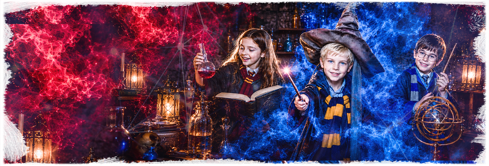

Приезжаете за 5 минутВстречаем гостей и помогаем с организацией.

Ангарск: ул. Восточная, 10А
Гарри Поттер
Волшебный детский праздник в Ангарске: задания, тайники, магическая атмосфера, аниматор и чайная зона после игры.
7+4-20 детей1 час игрычайная зонаот 1500 руб./чел.
Что входит в праздник
Гарри Поттер в Ангарске - детский квест-приключение для дня рождения, где дети проходят задания, ищут подсказки и действуют командой в волшебной атмосфере.
Формат можно адаптировать под возраст детей, состав компании и настроение праздника: только квест или игра с чайной зоной.
После прохождения удобно поздравить именинника, вынести торт и продолжить праздник за столом.
Почему удобно для дня рождения
- волшебная тема без взрослого хоррора;
- задания, тайники и командные решения;
- аниматор помогает детям по сюжету;
- одна понятная площадка в Ангарске;
- можно добавить чайную зону.
Как пройдет игра
Проходите инструктажОбъясняем правила, безопасность и формат игры.
Играете с ведущимВедущий держит темп и помогает по сценарию.
Чайная зона по желаниюМожно продолжить праздник с тортом и поздравлением.
Запишись на праздник
1. Выберите дату и время, заполните форму
2. Укажите возраст, количество детей и чайную зону
3. Нажмите кнопку забронировать
Цены и условия
Основные условия праздника Гарри Поттер в Ангарске: цена, возраст, количество детей, длительность, адрес и чайная зона.
От 1500 руб./чел. Итог зависит от даты, количества детей и дополнительных услуг.
Рекомендуемый возраст - 7+. Для младших школьников темп можно сделать спокойнее.
Обычно 4-20 детей. Для большого дня рождения состав лучше согласовать заранее.
Игра длится около 1 часа. После прохождения можно добавить чайную зону.
Ангарск: ул. Восточная, 10А.
Можно подготовить торт, поздравление, стол и время для общения после игры.
Аниматор объясняет правила, помогает детям и держит темп праздника.
Можно выбрать только игру или добавить чайную зону и дополнительные активности.
Кому подойдет Гарри Поттер
Хороший выбор, если вы хотите
- детям от 7 лет;
- любителям волшебных историй;
- дню рождения с готовым сценарием;
- компании друзей или классу;
- родителям, которым нужен праздник на одной площадке.
Гарри Поттер - хороший выбор для детей, которым нравятся загадки, костюмы и волшебная атмосфера. Это приключение без жесткого страха и сложных правил.
Для родителей формат удобен тем, что игровая часть, ведущий и чайная зона собираются на одной площадке.
Атмосфера праздника
Картинки помогают почувствовать настроение волшебного праздника в Ангарске без раскрытия всех заданий.


Схема проезда
Гарри Поттер проходит на площадке IQuest: Ангарск: ул. Восточная, 10А. Ниже - карты, чтобы заранее понять, куда ехать.
Ангарск
ул. Восточная, 10А
Площадка IQuest в Ангарске для детского праздника. Гарри Поттер.
Открыть в Яндекс КартахВидео с праздника
Короткие ролики помогают заранее почувствовать формат: атмосфера, реакции детей и настроение без раскрытия сценария.
Гарри Поттер на день рождения в Ангарске
Детский день рождения Гарри Поттер в Ангарске проходит на площадке IQuest по адресу ул. Восточная, 10А. Это квест для детей 7+ с ведущим и возможностью добавить чайную зону.
Страница рассчитана на запросы родителей: где отметить день рождения ребенка в стиле Гарри Поттера в Ангарске, сколько стоит квест, какой возраст подходит и можно ли принести торт.
Перед бронированием лучше назвать дату, возраст детей, количество гостей и пожелания по столу.
Локальная информация
- Адрес: Ангарск, ул. Восточная, 10А.
- Телефон: 8 (901) 666-888-1.
- Возраст: 7+.
- Формат: волшебный квест и чайная зона по желанию.
- Подходит для дня рождения и компании друзей.
Похожие детские форматы
ИркутскДетские праздники в Иркутске
Все детские квесты и активные игры для Иркутска.
АнгарскДетские праздники в АнгарскеВсе детские сценарии и игры на площадке в Ангарске.
Выбор форматаДетские праздникиСравните квесты, активные игры и варианты для дня рождения.
ИркутскГарри Поттер в ИркутскеВерсия волшебного сценария на иркутских площадках IQuest.
Похожий сценарийКосмический корабль в АнгарскеФантастическая миссия для детей от 7 лет.
Похожий сценарийПобег из тюрьмы в АнгарскеКомандный квест для детей и подростков.
Готовый праздникДень рождения под ключ в АнгарскеПрограмма с квестом, чайной зоной и организацией.
Все вариантыДетские квесты в АнгарскеСравните площадку, форматы и адрес IQuest в городе.
Гарри Поттер или другой праздник
Если выбираете формат дня рождения, сравните возраст, активность, адрес и то, насколько сценарий подходит для праздника.
| Формат | Возраст | Гости | Настроение | Адрес | Для дня рождения |
|---|---|---|---|---|---|
| Гарри Поттер | 7+ | 4-20 | волшебство | Ангарск | да |
| Космический корабль | 7+ | 4-20 | приключение | Ангарск | да |
| NERF | 7+ | 4-20 | активная игра | Ангарск | да |
| Прятки | 7+ | 4-30 | темнота | Ангарск | да |
Что важно родителям
Лучше обсудить заранее
- возраст детей и количество гостей;
- нужна ли чайная зона после игры;
- будет ли торт, свечи и поздравление;
- нужны ли дополнительные активности или ведущий;
- какой город и адрес удобнее для семьи.
Если праздник нужен без спешки, лучше сразу заложить время на игру и чайную зону. Так дети успевают пройти сценарий, поздравить именинника и спокойно пообщаться после приключения.
Для класса или большой компании администратор поможет подобрать формат, чтобы всем хватило места, ролей и внимания ведущего.
Что обычно нравится детям
Детям нравится волшебная тема, поиск подсказок и ощущение приключения.
Сценарий помогает детям обсуждать решения и проходить задания вместе.
После игры удобно перейти к поздравлению именинника и чайной зоне.
Частые вопросы
Где проходит Гарри Поттер в Ангарске?
На площадке IQuest по адресу ул. Восточная, 10А.
С какого возраста подходит сценарий?
Рекомендуемый возраст - 7+.
Можно ли отметить день рождения?
Да, к квесту можно добавить чайную зону, торт и поздравление.
Сколько детей может участвовать?
Обычно 4-20 детей, состав лучше согласовать заранее.
Выбрать время: Гарри Поттер
Позвоните или оставьте бронь на сайте: администратор подскажет свободное время, адрес, формат чайной зоны и программу под возраст детей.
Позвонить 8 (901) 666-888-1